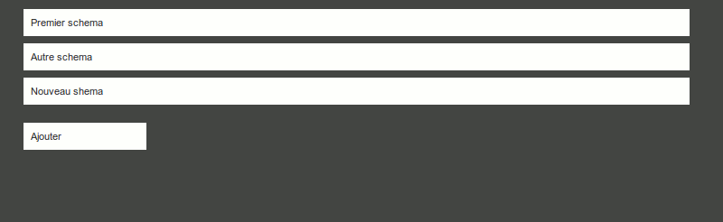
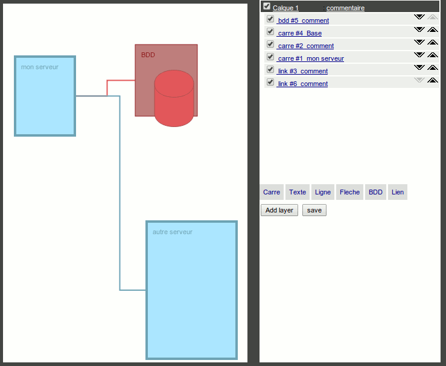
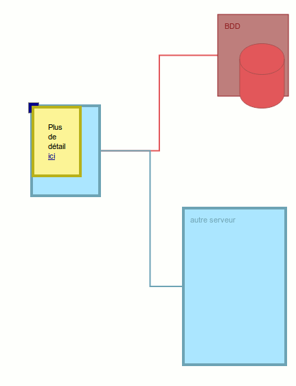
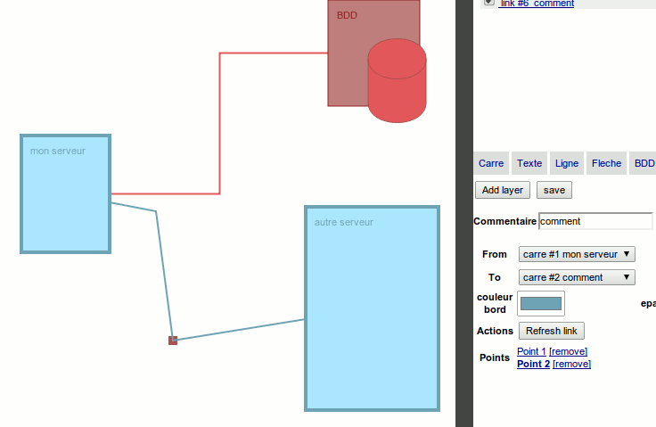

MKDraw
Présentation
MKDraw est un outil de dessin de schéma en HTML5 basé sur le mkframework- gestion de calques
- possibilité d'afficher/cacher un calque/objet
- création de rectangles, bases de données
- création de liens entre des éléments
- placement fixe ou relatif à un autre élément
- définition de couleur de fond, de bord ainsi que leur épaisseur
- précision d'un texte pour un rectangle/base de données
- possibilité d'ajouter une infobulle sur un élement (prenant en compte l'html)
- possibilité d'enregistrer votre schéma


Avec la possibilité de mettre une info bulle

On peut egalement definir manuellemenet le chemin du lien

Télécharger
Télécharger l'applicationGithub
https://github.com/imikado/mkdraw
git clone https://github.com/imikado/mkdraw .